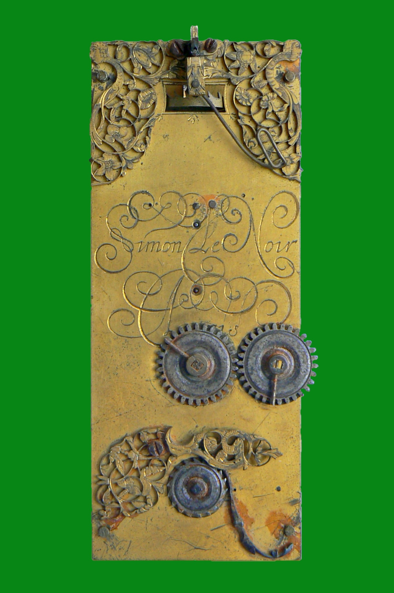

Dernière mise à jour : 05/02/2022
Le projet Simon Le Noir a été initié en octobre 2020 à la suite de la découverte d'un mécanisme d'horloge assez atypique, signé Simon Le Noir, qui pourrait être en réalité d'une importance historique significative.
Le dictionnaire de Tardy révèle en effet une anecdote intriguante à propos de Simon Le Noir :
En 1649, Casimir, futur roi de Pologne, ayant eu avis de l'application par Vincent Galilée d'un long pendule à un mouvement d'horlogerie, en écrivit en France à quelques savants connus d'une nouvelle horloge beaucoup plus juste que toutes les autres. Quelques-uns de ces savants communiquèrent cette nouvelle à un horloger de Paris nommé Simon Le Noir, un des plus habiles de son temps. Il appliqua aussi ce long pendule à un mouvement d'horloge comme l'avait fait Galilée fils. C'est donc Simon Le Noir qui fit, à Paris, de ces horloges qu'on nomme aujourd'hui encore "Pendulles à secondes", à cause que le pendule qui y est appliqué marque une seconde à chacune de ses vibrations.
Cette anecdote est restée jusqu'à présent ignorée, faute d'éléments tangibles pour la soutenir ou la démentir.
La découverte en octobre 2020 d'un mécanisme d'horloge à pendule signé Simon Le Noir, en apparence très primitif et sensiblement différent des autres horloges à pendules connues, vient potentiellement attribuer une forme de vérité à l'anecdote.
Lien vers la version anglaise du site : english version